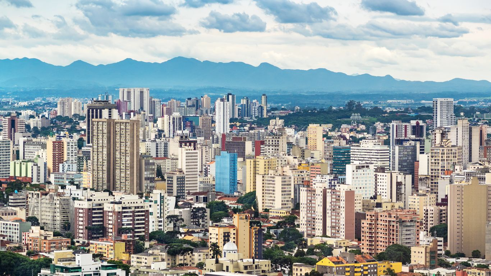
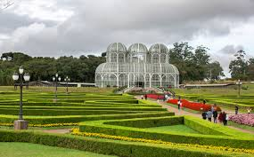
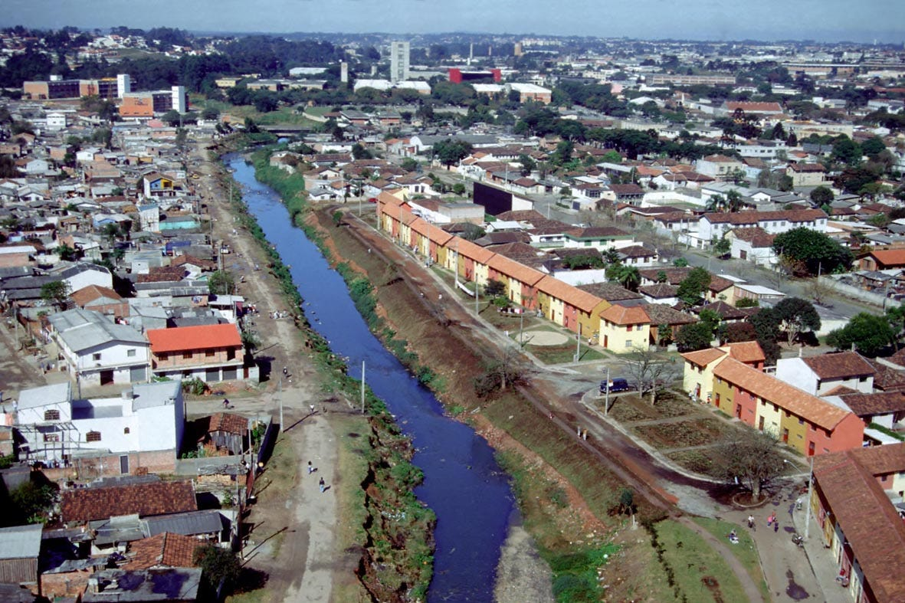
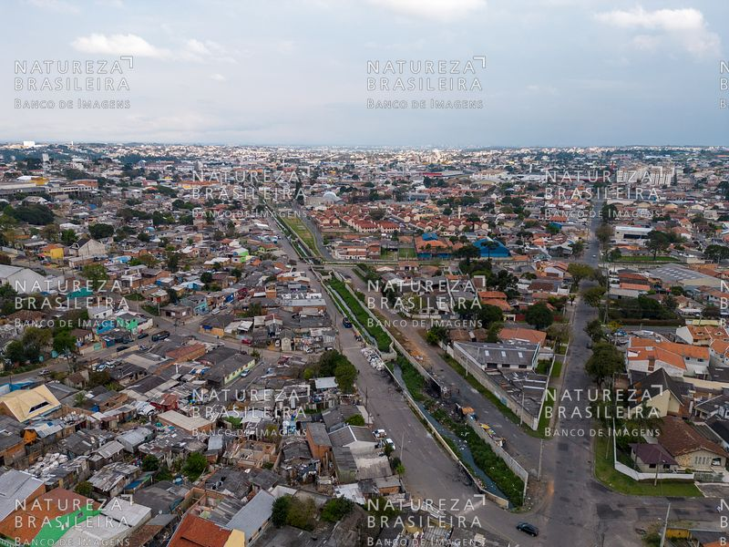
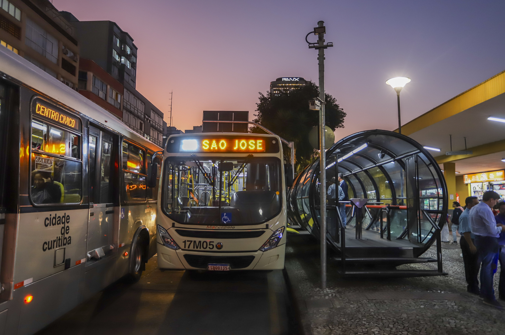
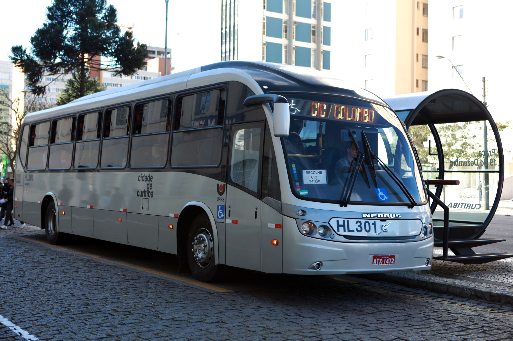
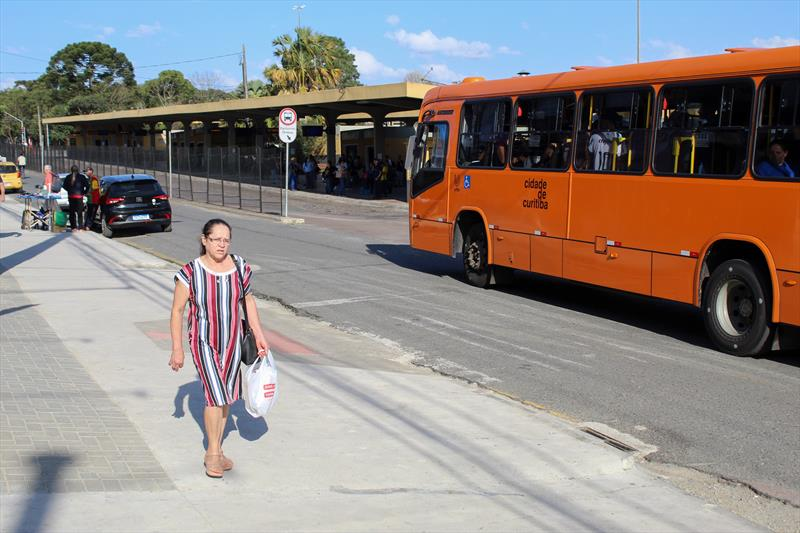
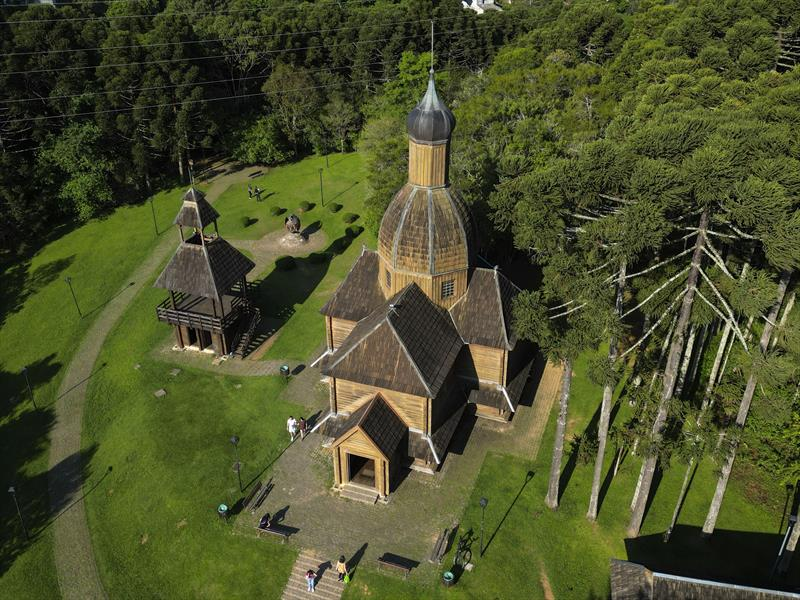

Curitiba, capital do estado do Paraná, surgiu no século XVII a partir de um pequeno povoado formado por exploradores e mineradores em busca de ouro. A fundação oficial ocorreu em 1693, quando a vila foi elevada à categoria de município com o nome de Nossa Senhora da Luz dos Pinhais. Ao longo do século XIX, Curitiba recebeu um grande número de imigrantes europeus, principalmente alemães, italianos, poloneses e ucranianos. Esses grupos influenciaram fortemente a cultura, a arquitetura e os costumes locais, deixando marcas visíveis até hoje em bairros, culinária e tradições. No século XX, a cidade se destacou pelo planejamento urbano inovador. A partir da década de 1970, Curitiba tornou-se referência mundial em transporte público e sustentabilidade, com a criação de um sistema integrado de ônibus e áreas verdes bem distribuídas. Hoje, Curitiba é conhecida por sua qualidade de vida, organização e diversidade cultural, sendo considerada uma das cidades mais bem planejadas do Brasil.
Links para mais Informações
| Ponto Turístico | Bairro | Ano de Criação |
|---|---|---|
| Jardim Botânico | Jardim Botânico | 1991 |
| Parque Barigui | Bigorrilho | 1972 |
| Ópera de Arame | Abranches | 1992 |
| Museu Oscar Niemeyer | Centro Cívico | 2002 |
| Torre Panorâmica | Mercês | 1991 |
Mais Fotos de Pontos Turisticos







